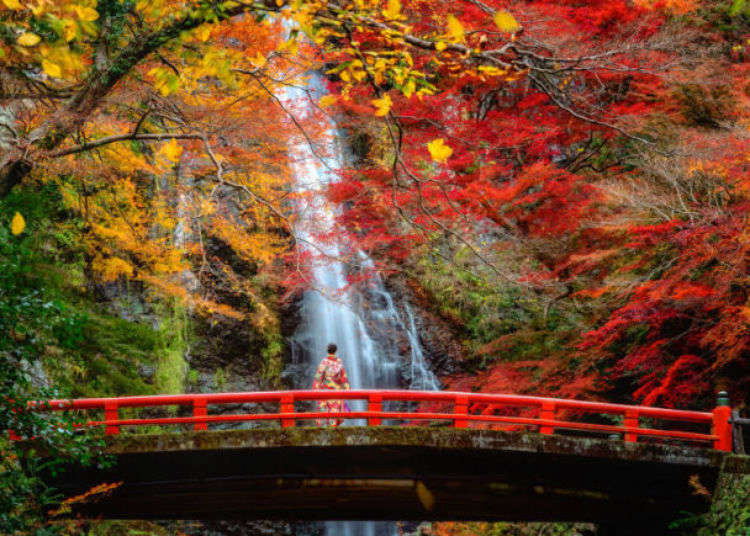
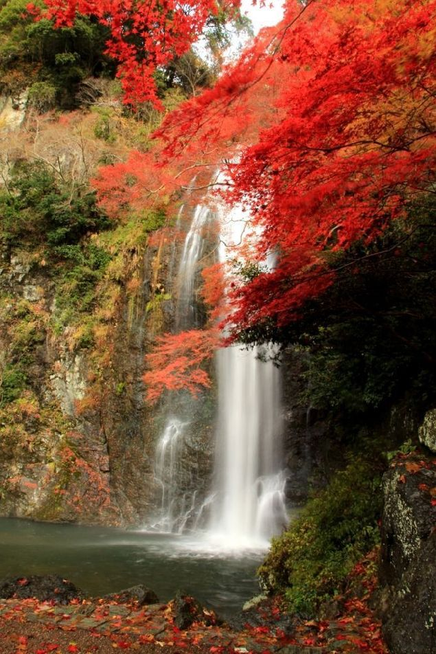
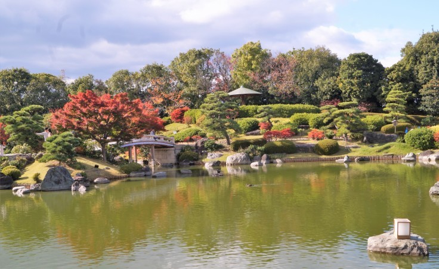
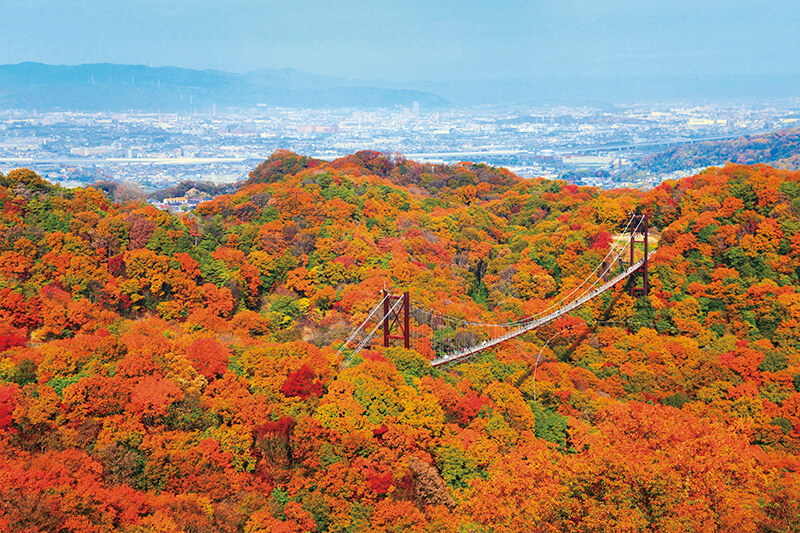
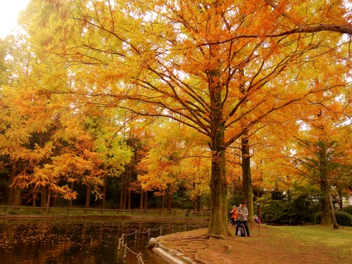

<!DOCTYPE html>
<html lang="en">
<head>
    <link rel="stylesheet" href="to_top.css">
    <meta http-equiv="content-type" content="text/html; charset=utf-8">
        <script src="./jquery-3.5.1.min.js"></script>
        <script>
            $( document ).ready( function() {
              var navOffset = $( '.top_nav' ).offset();
              $( window ).scroll( function() {
                if ( $( document ).scrollTop() > navOffset.top ) {
                  $( '.top_nav' ).addClass( 'navFixed' );
                }
                else {
                  $( '.top_nav' ).removeClass( 'navFixed' );
                }
              });
            } );

            
          </script>
        <link href="https://fonts.googleapis.com/css2?family=Noto+Serif+JP:wght@200&display=swap" rel="stylesheet">
        <link rel="stylesheet" href="https://cdnjs.cloudflare.com/ajax/libs/font-awesome/5.14.0/css/all.min.css">
        <link href="https://fonts.googleapis.com/css2?family=Noto+Serif+KR:wght@300&display=swap" rel="stylesheet">
    <title>Document</title>
</head>
<style>
    .loader_background {
                width: 100%;
                height: 120%;
                margin-top: -20px;
                background-color: rgb(255, 255, 255);
                display: block;
                position: fixed;
                z-index: 100;
                text-align: center;
            }
            .loader {
                background-image: url('momiji.png');
                background-repeat: no-repeat;
                background-size: 100%;
                position: fixed;
                left: 50%;
                top: 50%;
                transform: translate(-50%, -50%);
                width: 180px;
                height: 180px;
                animation: spin 2s linear infinite;
            }
            @keyframes spin {
                0% {
                    transform: translate(-50%, -50%) rotate(0deg);
                }
                100% {
                    transform: translate(-50%, -50%) rotate(360deg);
                }
            }
/**//**//**//**//**//**//**//**//**//**//**//**//**//**//**//**//**//**//**//**//**//**//**//**//**//**/
    a {
        text-decoration: none;
    }
    body {
        margin: 20px; font-family: 'Noto Serif JP', 'Noto Serif KR' ;
        text-align: center;
    }
    .page_back {
        background-image: url('page_back.jpg');
                width: 100%;
                height: 2000px;
                position: relative;
                margin-top: 20px;
    }

    .stamp {
        position: absolute;
                width: 80px; height: 80px;
                left: 50%; top: 100%;
                transform: translate(-50%, -50%)
    }
    .momijiyu {
        font-size: 25px;
                margin-left: 10px;
                padding-top: 0;
                color: #deb3b3;
                font-weight: bold;
                padding-left: 20px;
                
    }
    .top_nav {
                display: flex;
                padding-top: 0;
                background-color: #c97e7e;
                justify-content: space-between;
                z-index: 98;
                transition: 0.3s;
                
            }
    .navFixed {
               position: fixed;
               top: 0px; left: 0px;
               width: 100%;
               z-index: 99;
               background-color: rgba(255, 0, 0, 0);
                }
    .momijiyu a:visited {
        color: #deb3b3;
    }
    .momijiyu a {
        color:  #deb3b3;
    }

    .top_nav #menu a {
                margin-right: 25px;
                cursor: pointer;
                color: #7a2c2c;
                font-size: 17pt;
                transition: 0.5s;
                text-align: center;
            }

     .top_nav #menu a:hover {
                color: beige;
                background-color: #b14949;
                border-radius:30%;
            }

    #menu, #sub_menu {margin: 0; padding: 0; list-style-type: none; z-index: 99;}

    #menu > li {float: left;}

    #menu > li > a {
        display: block; 
        text-align: center;
        text-decoration: none;
    }

    #sub_menu {
        position: absolute;
        opacity: 0;
        visibility: hidden;
        transition: 1s;
    }

    #sub_menu > li {
        padding: 10px;
        border-bottom: 1px solid gray;
        
    }

    #sub_menu > li > a {
        text-decoration: none;
        font-size: 12pt;
    }

    #menu > li:hover #sub_menu {
        opacity: 1;
        visibility: visible;
    }


/**//**//**//**//**/
    .click {
        animation: blink-animation 2s ease-in-out infinite;
        margin-top: 20px;
        font-size: 15pt;
        text-align: center;
        color: #deb3b3;
        font-weight: 500;

    }
    .box {
        display: inline-flex;
       
    }
    .box1 {
        
        left: 50%;
        width: 400px;
        position: relative;
        
    }
    .box1 > .photo_width_frame {
        width: 400px; height: 250px;
        overflow: hidden;
        margin-top: 10px;
        

    }
    .box1 > .photo_width_frame img{
        width: 400px; height: 300px;
        display: flex;
        position: relative;
        bottom: 10px;

    }

    .box1 img, .box2 img {
        opacity: 0.8;
        filter: saturate(150%);
        transition: 0.5s;
    }

   
    .box1 iframe, .box1 .photo_width_frame {
        display: flex;
        position: relative;
        border-radius: 5%;
    }
    .box2 {
        
        right: 50%;
        width: 400px;
        position: relative;
        margin-right: 10px;
    }
    .box2 > .photo_height_frame {
        width: 400px; height: 510px;
        overflow: hidden;
        border-radius: 5%;
        
    }

    .box2 > .photo_height_frame img {
        height: 550px; width: 400px;
        position: relative;

        
    }
    /**//**//**//**//**//**//**//**//**//**//**//**//**//**//**//**/

    .box_2 {
        
        display: inline-flex;
        margin-top: 20px;
       
        
    }

    .box3 {
        
        left: 0%;
        width: 400px;
        position: relative;
        
    }
    .box3 > .photo_width_frame {
        width: 400px; height: 250px;
        overflow: hidden;
        margin-top: 10px;
        

    }
    .box3 > .photo_width_frame img{
        width: 400px; height: 300px;
        display: flex;
        position: relative;
        bottom: 10px;

    }

    .box3 img, .box4 img {
        opacity: 0.8;
        filter: saturate(150%);
        transition: 0.5s;
    }

    img:hover {
        opacity: 1;
    }
    .box3 iframe, .box3 .photo_width_frame {
        display: flex;
        position: relative;
        border-radius: 5%;
    }
    .box4 {
        
        right: 0%;
        width: 400px;
        position: relative;
        margin-left: 10px;
    }
    .box4 > .photo_height_frame {
        width: 400px; height: 510px;
        overflow: hidden;
        border-radius: 5%;
        
    }

    .box4 > .photo_height_frame img {
        height: 550px; width: 400px;
        position: relative; }
/**//**//**//**//**//**//**//**//**//**//**//**//**//**//**//**//**//**//**//**/
    
    .box_3 {
        
        display: inline-flex;
        margin-top: 20px;
        }

    .box5 {
       
        left: 0%;
        width: 820px;
        position: relative;

        
    }
    .box5 > .photo_width_frame {
        width: 400px; height: 250px;
        overflow: hidden;
        margin-left: 5px;
       
    
        

    }
    .box5 > .photo_width_frame img{
        width: 400px; height: 300px;
        display: flex;
        position: relative;
        bottom: 10px;

    }

    .box5 img {
        opacity: 0.8;
        filter: saturate(150%);
        transition: 0.5s;
    }

    img:hover {
        opacity: 1;
    }

    
    .box5 iframe, .box5 .photo_width_frame {
        display: inline-flex;
        position: relative;
        border-radius: 5%;   
    }
/**//**//**//**//**//**//**//**//**//**//**//**//**//**//**//**/
    .copyright {
               text-align: center;
                line-height: 25px;
                color: gray;
                padding-top: 30px;
                padding-bottom: 20px;
                font-weight: 200;
            }

     .copyright a {
             text-decoration: none;
             COLOR: GRAY;
            }
     .copyright a:visited {
            color: gray;
            }
/**//**//**//**//**//**//**//**//**//**//**//**//**//**//**//**/
          

@keyframes blink-animation {
  0% {color: #deb3b3}
  50% {color:#c97e7e}
}
</style>
<body>
    <div class="loader_background">
        <div class="loader"></text>
    </div>
</html></div><script>
$(window).on('load', function () {
    $('.loader').fadeOut();
    $('.loader_background').fadeOut();
});</script>
    <div class="page_back">
        <nav class="top_nav">
            <text class="momijiyu"><a href="index.html">
                <i class="fab fa-slack"></i>
                モミジユ</a>
            </text>
            <ul id="menu">
                <li><a class="japanese">日本語</a></li>
                <li><a class="korean">한국어</a></li>
                <li><a class="another_site">他の地域</a>
                    <ul id="sub_menu">
                        <li class="kyouto_menu"><a href="kyouto.html">京都</a></li>
                        <li class="nara_menu"><a href="nara.html">奈良</a></li>
                        <li class="siga_menu"><a href="siga.html">滋賀</a></li>
                    </ul></li>  
                
                <li><a href="index.html" class="modoru">戻る</a></li>
            </ul>
        </nav>
        <br>
        <span class="click">写真をクリックすると、該当ページにアクセスします。</span><br><br>
     <div class="box">
      <div class="box1">
        <iframe src="https://www.google.com/maps/embed?pb=!1m18!1m12!1m3!1d52389.83195166719!2d135.43732637910153!3d34.84706759999999!2m3!1f0!2f0!3f0!3m2!1i1024!2i768!4f13.1!3m3!1m2!1s0x6000f98dcd18275b%3A0x11b23b2040fdbcea!2sMinoh%20Park!5e0!3m2!1sko!2skr!4v1599511301103!5m2!1sko!2skr" width="400" height="250" frameborder="0" style="border:0;" allowfullscreen="" aria-hidden="false" tabindex="0"></iframe>
        <div class="photo_width_frame"><a href="http://www.mino-park.jp/" target="_blank"></div>
      </div></a>
      <div class="box2">
        <div class="photo_height_frame"><div class="photo_height"><a href="http://www.mino-park.jp/" target="_blank"></a></div></div>
      </div></div></a>

<br>
        <div class="box_2">
        <div class="box3">
            <iframe src="https://www.google.com/maps/embed?pb=!1m18!1m12!1m3!1d6561.577898088147!2d135.52586342358697!3d34.685275721753506!2m3!1f0!2f0!3f0!3m2!1i1024!2i768!4f13.1!3m3!1m2!1s0x6000e0c977655555%3A0x67f69eaef984d98b!2z7Jik7IKs7Lm0IOyEsSDqs7Xsm5A!5e0!3m2!1sko!2skr!4v1599592317088!5m2!1sko!2skr" width="400" height="250" frameborder="0" style="border:0;" allowfullscreen="" aria-hidden="false" tabindex="0"></iframe>
            <div class="photo_width_frame"><a href="https://www.osakacastlepark.jp/" target="_blank"></div>
          </div></a>
          <div class="box4">
            <div class="photo_height_frame"><div class="photo_height"><a href="https://www.osakacastlepark.jp/" target="_blank"></a></div></div>
    </div></div></a>

<br>
    <div class="box_3">
        <div class="box5">
            <iframe src="https://www.google.com/maps/embed?pb=!1m18!1m12!1m3!1d3964.3305939902857!2d135.4826216155582!3d34.558661316805754!2m3!1f0!2f0!3f0!3m2!1i1024!2i768!4f13.1!3m3!1m2!1s0x0%3A0x9cc6b180ef74c213!2z64uk7J207IS8IOqzteybkA!5e0!3m2!1sko!2skr!4v1599596624997!5m2!1sko!2skr" width="400" height="250" frameborder="0" style="border:0;" allowfullscreen="" aria-hidden="false" tabindex="0"></iframe>
            <div class="photo_width_frame"><a href="http://www.daisenteien.jp/" target="_blank"></div>
          </div></a></div>
<br>
    <div class="box_3">
        <div class="box5">
            <iframe src="https://www.google.com/maps/embed?pb=!1m18!1m12!1m3!1d26225.02143289293!2d135.65874680887794!3d34.75237639693682!2m3!1f0!2f0!3f0!3m2!1i1024!2i768!4f13.1!3m3!1m2!1s0x600118c89db92369%3A0xe84760dcc1ab2f21!2sHoshi%20no%20Buranko!5e0!3m2!1sko!2skr!4v1599596450535!5m2!1sko!2skr" width="400" height="250" frameborder="0" style="border:0;" allowfullscreen="" aria-hidden="false" tabindex="0"></iframe>
            <div class="photo_width_frame"><a href="http://osaka-midori.jp/mori/hoshida/" target="_blank"></div>
          </div></a></div>
<br>
    <div class="box_3">
        <div class="box5">
            <iframe src="https://www.google.com/maps/embed?pb=!1m18!1m12!1m3!1d12190.590234965757!2d135.5256055449447!3d34.810094005918614!2m3!1f0!2f0!3f0!3m2!1i1024!2i768!4f13.1!3m3!1m2!1s0x6000fcb4a27adf27%3A0x66a0ea1cda80d2b4!2z7JeR7Iqk7Y-s4oCZNzAg6riw64WQ6rO17JuQ!5e0!3m2!1sko!2skr!4v1599597121749!5m2!1sko!2skr" width="400" height="250" frameborder="0" style="border:0;" allowfullscreen="" aria-hidden="false" tabindex="0"></iframe>
          <div class="photo_width_frame"><a href="https://www.expo70-park.jp/" target="_blank"></div>
        </div></a></div></div>
    <div class="copyright">
        This is a web development practice page created by Jiyu K.
        <br>Jiyu K © 2020
        <br><a href="https://www.instagram.com/zyuzyuzyu_/?hl=ko" target="_blank"><i class="fab fa-instagram-square"></i>  Instagram</a> 
           |  <a href="https://www.facebook.com/people/%EA%B9%80%EC%A7%80%EC%9C%A0/100003686183487" target="_blank"><i class="fab fa-facebook-square"></i>  facebook</a> 
           |  <a href="#"></a><i class="fab fa-twitter-square"></i>  Twitter</a></div>
           <a id="back-to-top" href="#">Topへ</a>
           <script async src="to_top.js"></script>
  

        


 
        <script>
       
            $(document).ready(function(){
                $(".korean").click(function(){
                    $(".click").html("사진을 클릭하면 해당 페이지로 연결됩니다.");
                    $(".another_site").html("다른 지역");
                    $(".kyouto_menu").html("<a href='kyouto.html'>교토</a>");
                    $(".nara_menu").html("<a href='nara.html'>나라</a>");
                    $(".siga_menu").html("<a href='siga.html'>시가</a>");
                    $(".modoru").html("뒤로");
                    $("#back-to-top").html("Top으로");
                    

                });
               
                $(".japanese").click(function(){
                    $(".click").html("写真をクリックすると、該当ページにアクセスします。");
                    $(".another_site").html("他の地域");
                    $(".kyouto_menu").html("<a href='kyouto.html'>京都</a>");
                    $(".nara_menu").html("<a href='nara.html'>奈良</a>");
                    $(".siga_menu").html("<a href='siga.html'>滋賀</a>");
                    $(".modoru").html("戻る");
                    $("#back-to-top").html("Topへ");
        
                });
            });
        </script>
</body>
</html>